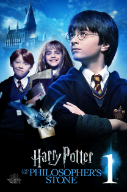

Harry Potter e a Pedra Filosofal
Harry Potter é um garoto órfão que vive infeliz com seus tios, os Dursleys. Ele recebe uma carta contendo um convite para ingressar em Hogwarts, uma famosa escola especializada em formar jovens bruxos. Inicialmente, Harry é impedido de ler a carta por seu tio, mas logo recebe a visita de Hagrid, o guarda-caça de Hogwarts, que chega para levá-lo até a escola. Harry adentra um mundo mágico que jamais imaginara, vivendo diversas aventuras com seus novos amigos, Rony Weasley e Hermione Granger.
Locais de gravação
Casa dos Dursley
Localizada em Bracknell, na Inglaterra, esta casa foi o ambiente utilizado que deu vida a casa dos Dursley.
saiba maisCasa dos Dursley
Localizada em Bracknell, na Inglaterra, esta casa foi o ambiente utilizado que deu vida a casa dos Dursley.
saiba mais